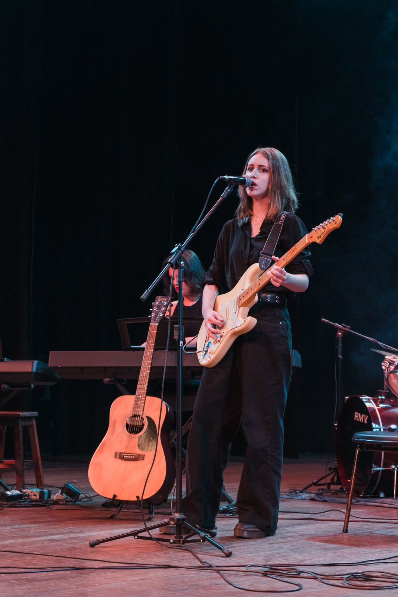
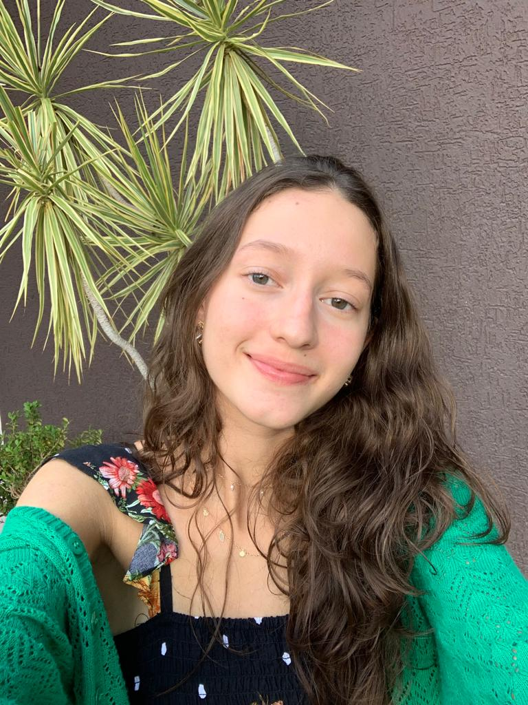

CRIADORES

Ana Macowski

Caroline Marques
Maria Luiza Oliveira
TRABALHO
O presente trabalho tem como objetivo integrar as disciplinas de Língua Portuguesa, ministrada pela professora Sandra Aleixo, e de Desenvolvimento Web, ministrada pelo Rafael Liberato, oferecidas pelo curso Técnico Integrado em Informática da UTFPR do campus de Campo Mourão. A proposta era fazer um resumo do livro "Casa de Pensão", de Aluísio de Azevedo, e a descrição de 3 personagens